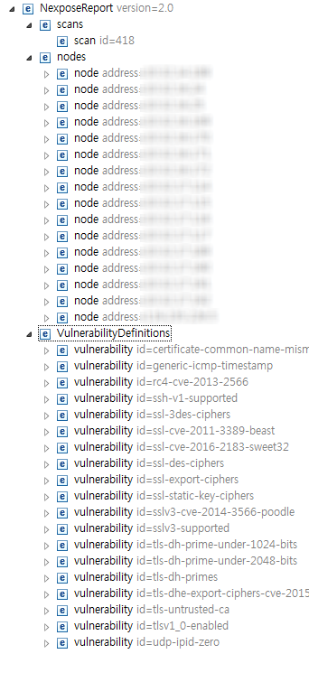

xml 2.0 format
Table of Contents
1 개요
넥스포즈에서 레포트 포맷을 xml 2.0 으로 해서 받았을 때의 포맷을 정리한다.

2 scans
스캔 개요(ID, 이름, 시작 시간, 종료 시간)
3 nodes
스캔 대상 노드들에 대한 정보 (deviceId, 넥스포즈 API에서 assetId로 쓰인다.)
3.1 names
호스트명
3.2 fingerprints
서버 종류 추측 결과
3.3 tests
icmp, udp 등 테스트
3.4 endpoints
열린 포트와 프로토콜 정보
4 VulnerabilityDefinitions
찾은 취약점들
4.1 vulnerability
취약점 ID, 이름, 심각도, CVSS점수
4.1.1 description
취약점 설명
4.1.2 references
참고 정보 (CVE 번호 등)
4.1.3 tags
- 취약점 태그. 예를들면 HTTP, Web 등
- API에서는 취약점 카테고리로 찾을 수 있다.
- /api/3/vulnerabilitycategories
- 카테고리는 Denial of Service, Oracle, Oracle Linux, Red Hat, Red Hat Enterprise Linux, Web, IAVM, Canonical, Ubuntu Linux, HTTP 등 총 241개가 있다.
4.1.4 solution
해결방법